Scope
- Intralaminar damage modelling with the Hashin 2D criterion
- Cohesive interface elements for delamination
- Bi-phasic shell-solid strategy for local indentation behaviour
- Validation against drop-weight impact tests and C-scan data
Detailed portfolio
A web-adapted version of the original engineering portfolio, reorganised into readable sections for recruiters and technical interviewers.
01 · Master's thesis · Politecnico di Milano
Graduate research focused on developing and validating an Abaqus/Explicit model for low-velocity impact in woven Glass/PPS thermoplastic laminates, including correlation with experimental impact response and ultrasonic C-scan measurements.

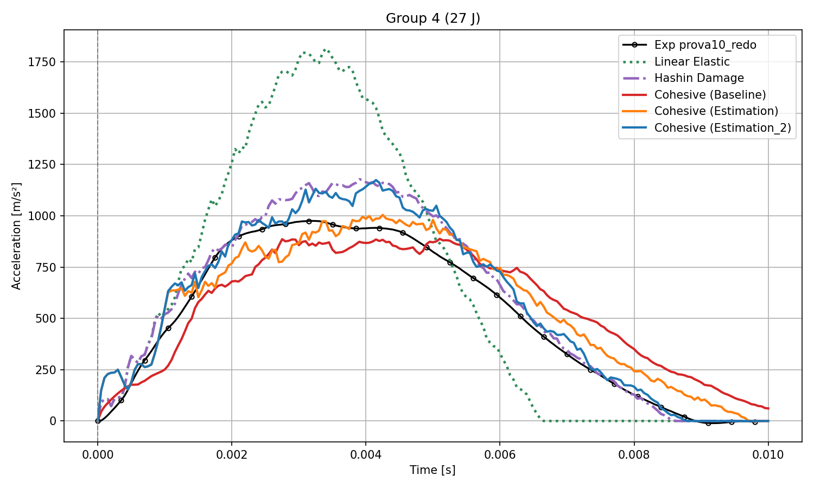
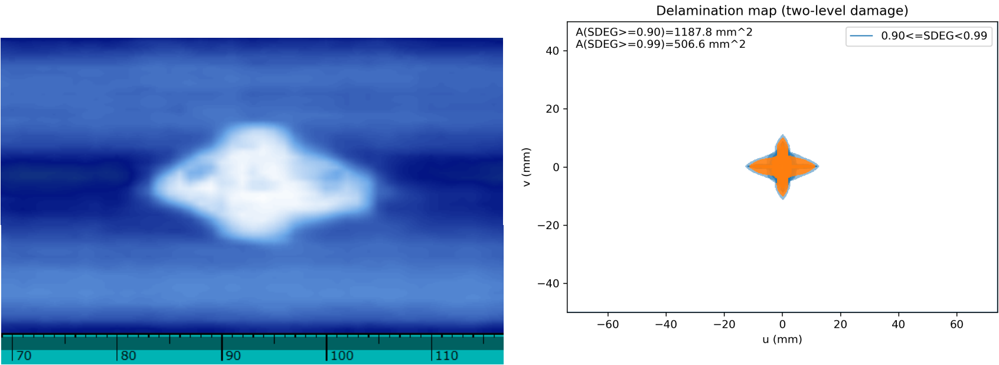
02 · Formula Student FEUP
Wishbones and vibrations lead for a two-person sub-team, responsible for structural simulation, bonded-joint validation, manufacturing support, and experimental testing for the Formula Student electric race car.

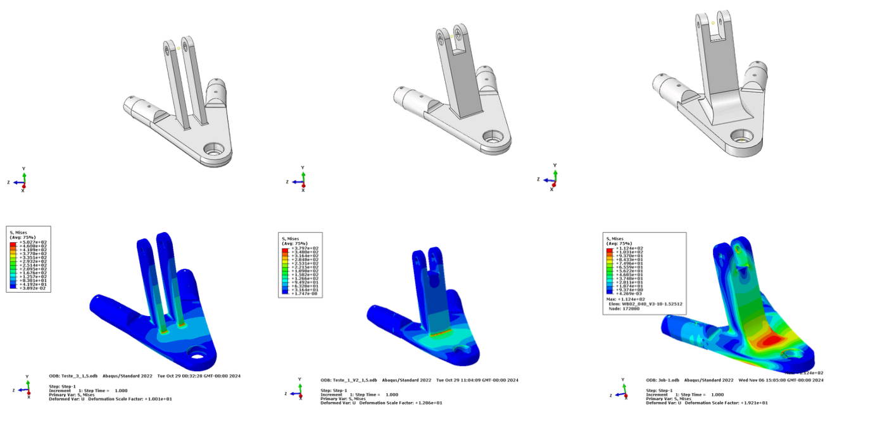
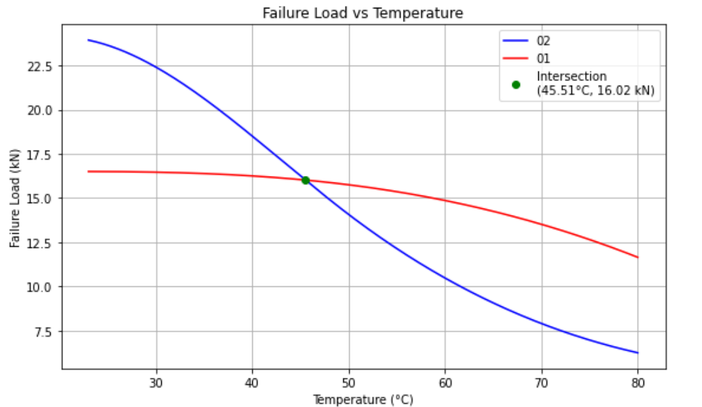
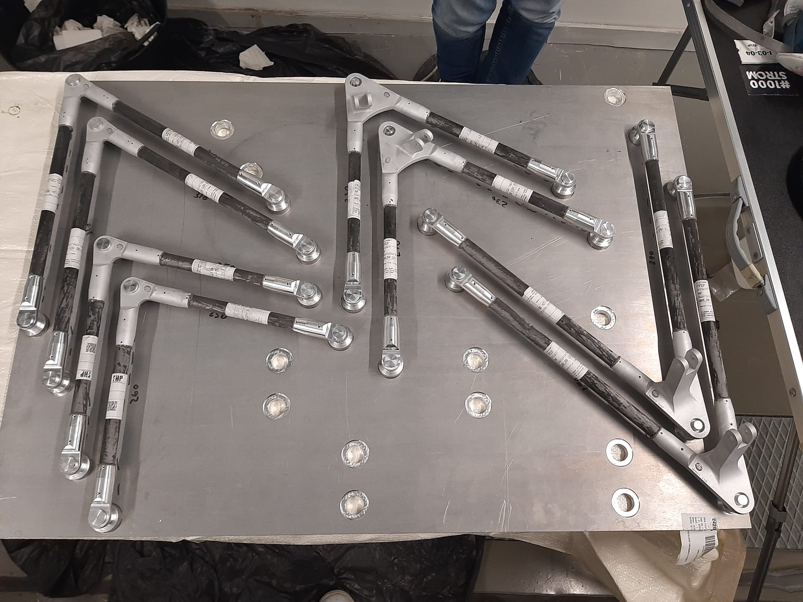
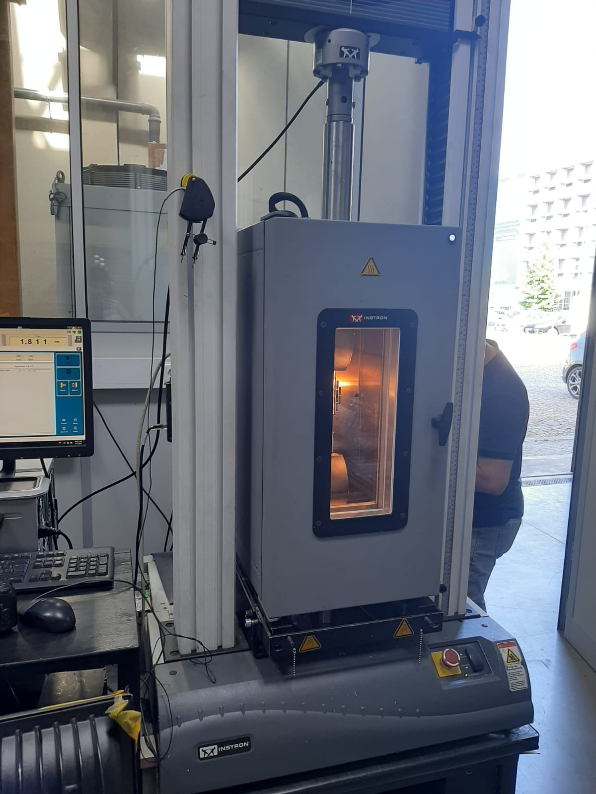
03 · Formula Student FEUP
Transmission engineering work for FSFEUP-02 covering tripod housing optimisation, drivetrain integration, spline reverse engineering, and safe-life halfshaft validation.

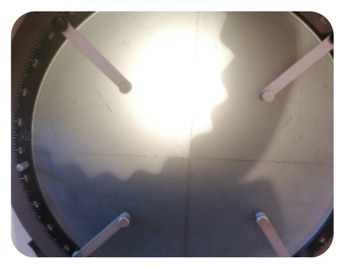
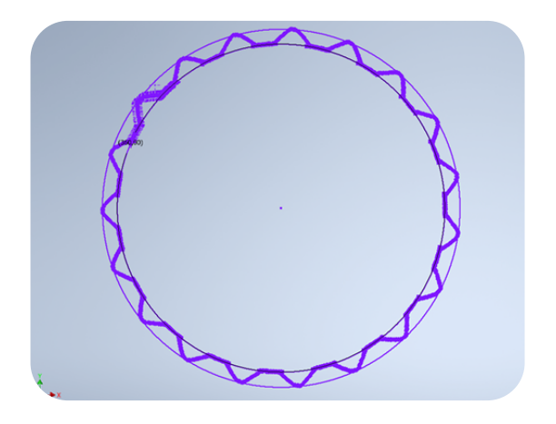
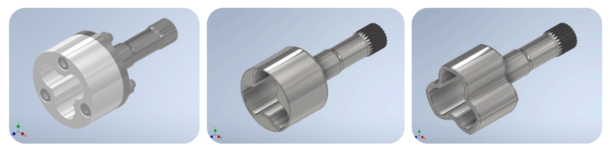
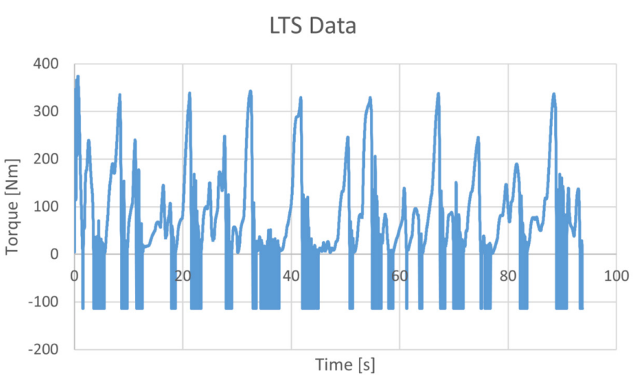
04 · FEUP MSc
Coursework and engineering study focused on aircraft wing-box verification, covering FEM-based static analysis, fatigue assessment, composite failure criteria, and inspection-based damage tolerance logic.

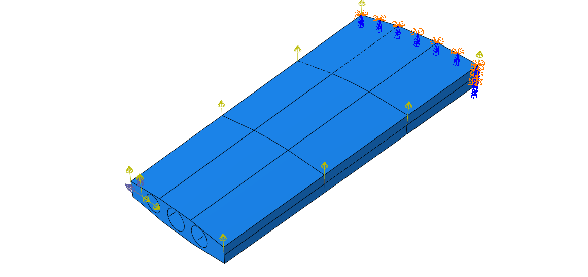
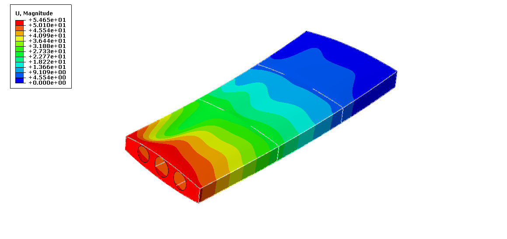
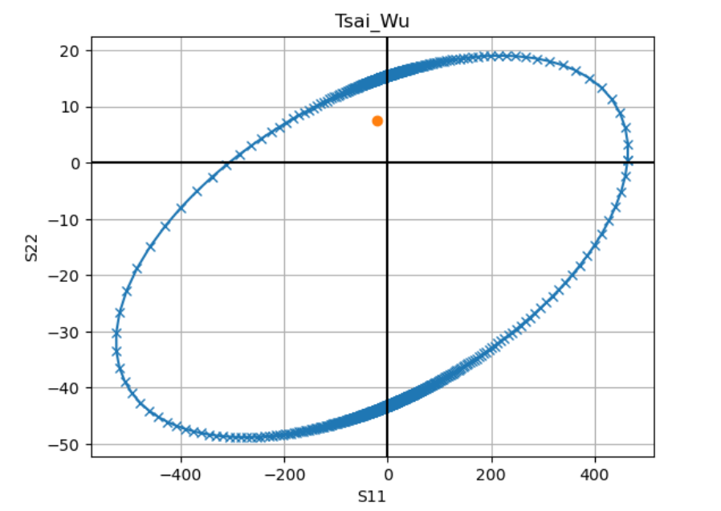
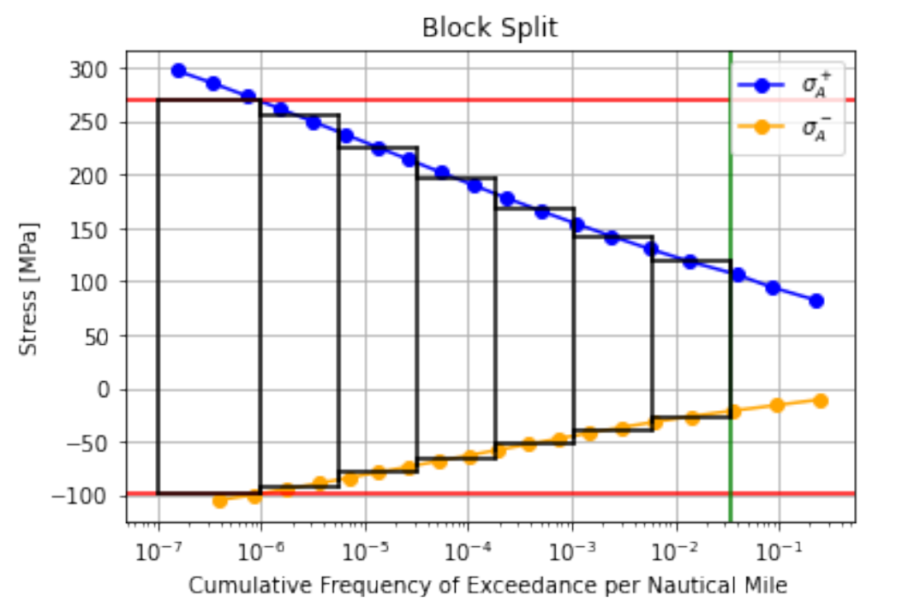
05 · FEUP MSc
Three related studies covering wing-rib material selection, composite laminate property prediction, uncertainty analysis, and bonded aluminium-CFRP joint behaviour.
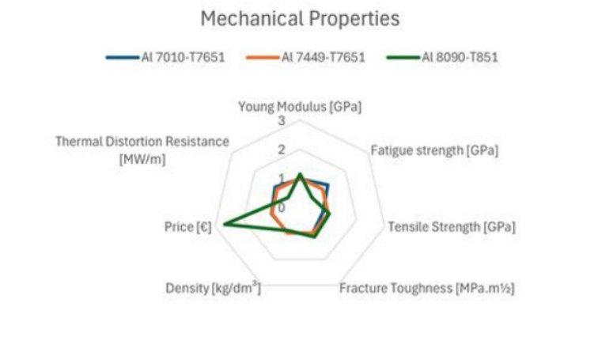
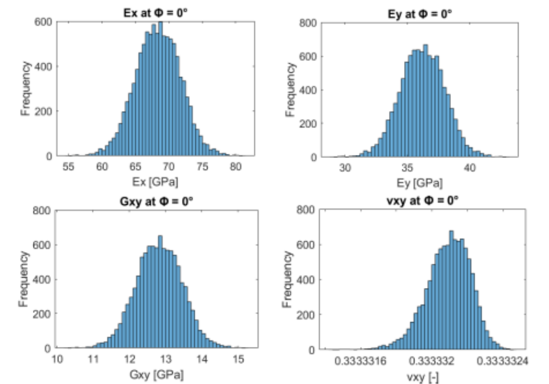
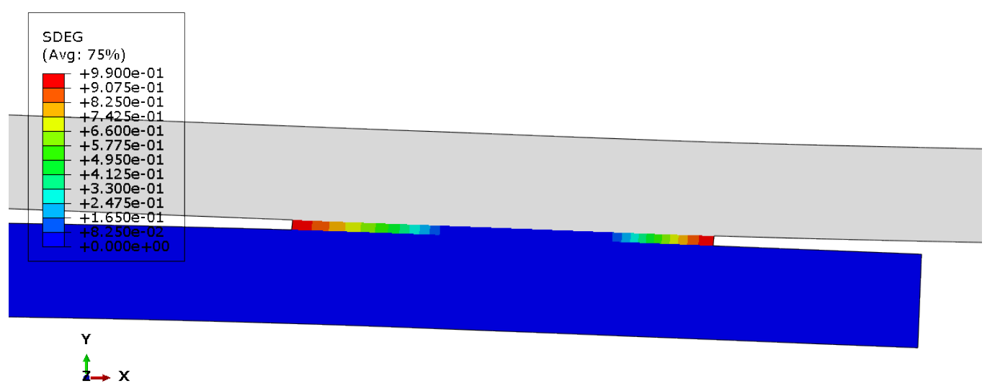
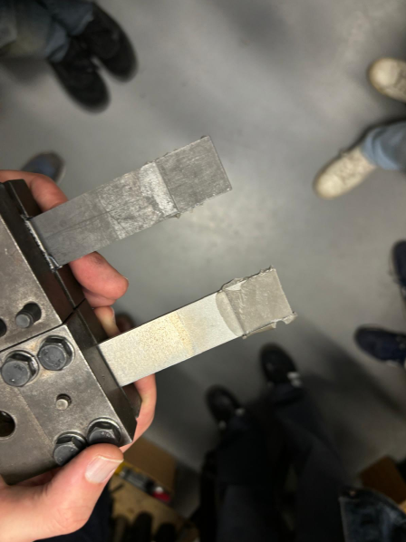
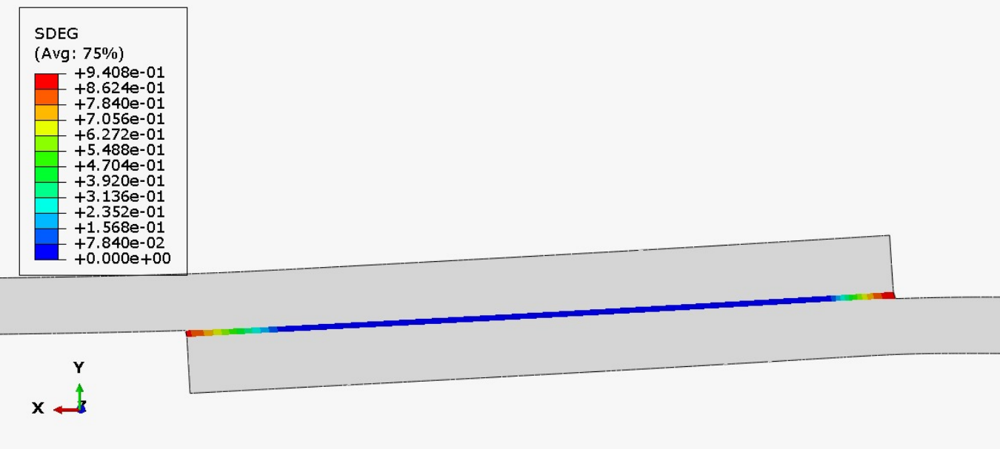
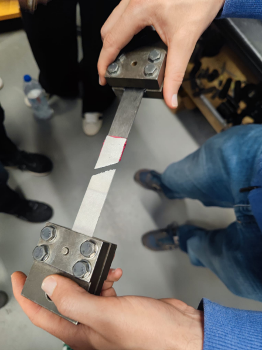
06 · FEUP MSc
A non-linear continuum mechanics project comparing eigenvalue buckling prediction and full non-linear response with geometric imperfections and plasticity.
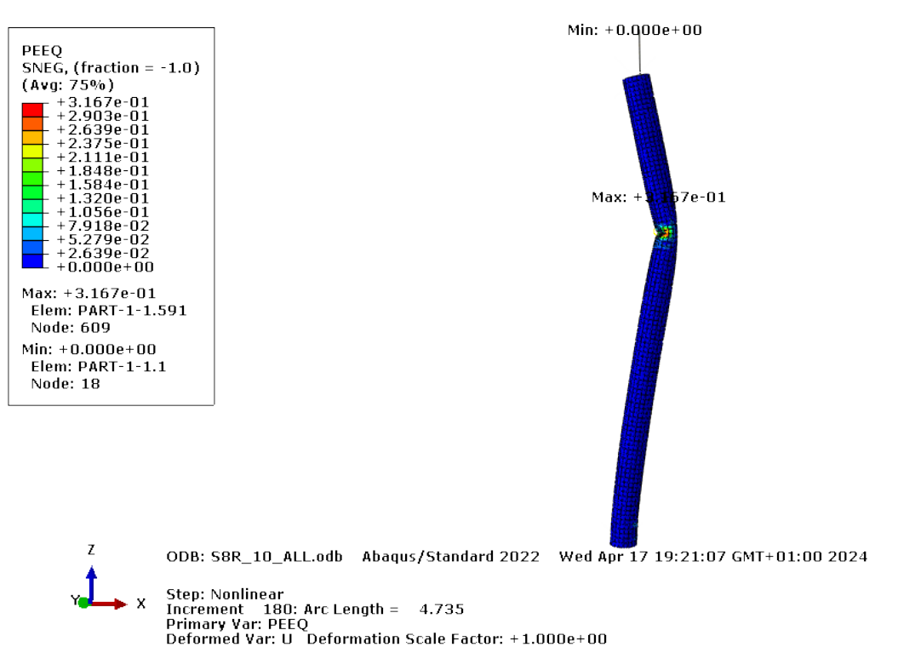
07 · WEG Portugal internship
Bachelor's thesis internship in product development, combining ANSYS steady-state thermal modelling with experimental validation using PT100 sensors, airflow control, and thermography.

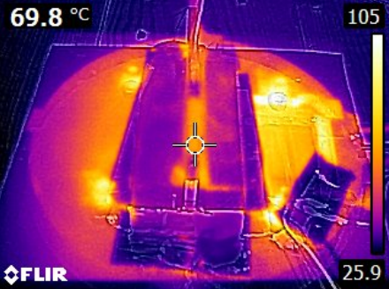
Contact
The site is prepared for GitHub Pages hosting, with a detailed projects page and direct document downloads for recruiter use.